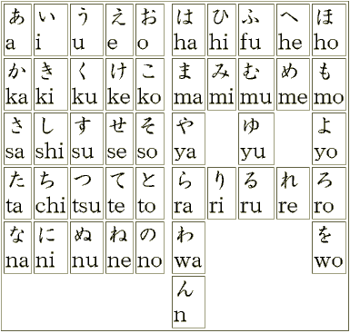

ฮิรางานะ

อักษรฮิรางานะ หรืออักษรภาพ มีพยัญชนะ 10 แถว 46 ตัวอักษร เช่น あ い う え お ในภาษาญี่ปุ่นมีสัญลักษณ์แทนเสียงหลักทั้งหมด 46 เสียง มีเสียงสระ 5 เสียง ได้แก่ あ(อะ), い(อิ), う(อุ), え(เอะ), お(โอะ) โดยปกติอักษรฮิรางานะจะใช้เขียนคำที่เป็นภาษาญี่ปุ่นดั้งเดิม